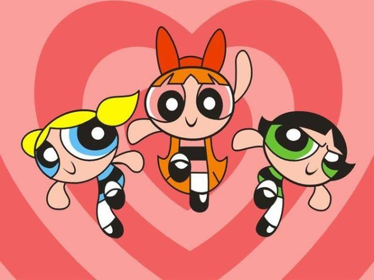

Conheça o desenho das Meninas Superpoderosas
As Meninas Superpoderosas é uma animação que conquistou fãs de todas as idades. Criado por Craig McCracken, o desenho conta a história de três adoráveis garotinhas com superpoderes.
Florzinha, Lindinha e Docinho são as heroínas que protegem a cidade de Townsville de vilões e salvam o dia com seu espírito corajoso e poderes incríveis. Cada uma das Meninas Superpoderosas tem características únicas:
- Florzinha - A líder do grupo, corajosa e inteligente.
- Lindinha - A alegria em pessoa, sempre disposta a ajudar.
- Docinho - A mais temperamental, mas também a mais forte e destemida.
O desenho das Meninas Superpoderosas é uma mistura perfeita de ação, comédia e mensagens positivas, ensinando às crianças lições valiosas sobre amizade, trabalho em equipe e o poder de fazer a coisa certa.